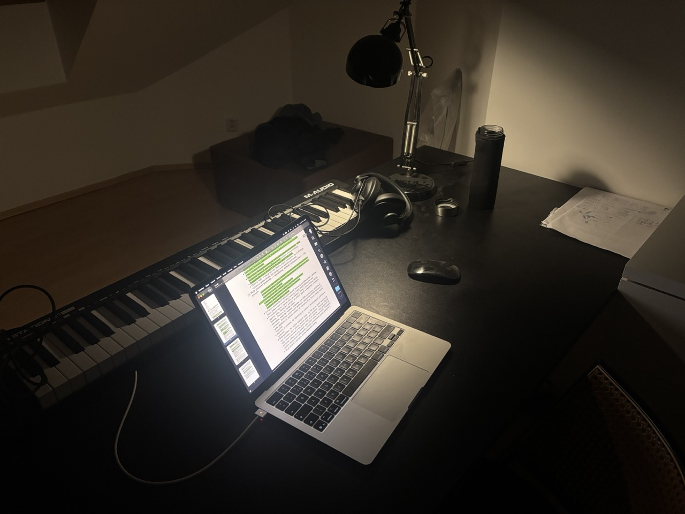

PRACOVNÉ PROSTREDIE

MIDI klávesa
Túto 61-klávesovú MIDI klávesu od M-Audio používam na hudobnú produkciu.
Laptop
Na svojom laptope robím všetko od školy po hudobnú produkciu.
Voda
H2O.
Papier
Papier používam každý deň na usporiadanie myšlienok pri nových informáciach a pod., následne ho hneď vyhodím.
Slúchadlá
Štúdiové slúchadlá od AKG používam pri hudobnej produkcii.